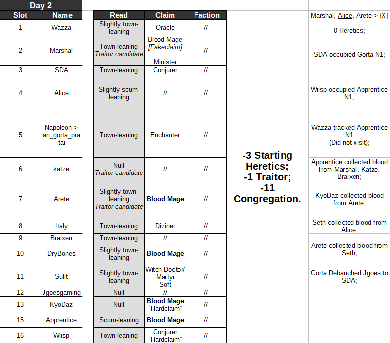

Hello.
Feel free to talk and theorize together; although you’re getting no information from us hosts.
1 Like
@Geyde
You might already know this, but I’m a complete noob without any FM experience, so I’m basically going to use this chat as a space to try and read people, then see how accurate said reads are.
My plan is to post somewhat detailed readlists somewhere around each EoD and occasionally back them up with a spreadsheet. During all other times we can just discuss our thoughts and try to narrow down who is who. I hope that sounds good to you. 
1 Like
Alright
Cool
I’ll give comments
2 Likes
I hope it didn’t come out like I’m trying to discourage you from posting, I would like to hear your take a lot, especially since you’ve actually played before.
1 Like
I, surprisingly, don’t have that much time to follow the game
So what I probably will do is comment on particularly striking things and try to find the LW
1 Like
Do you have any thoughts on Arete’s play right now? I know it’s early but this feels very different from what I’ve seen from them before.
There’s no D1 Ritual so this aggression looks rather strange – I do not think it would come from scum?
Their tone definitely feels awkward, like someone easing themselves into a pool by throwing some stuff out that doesn’t appear to be well thought out
Ritual, for scum, wants to go on middling scum
I might be tinfoiling too hard but to me it feels like they are attempting to make some sort of a play by actively going against their usual meta.
Kyo’s reaction so far has been interesting:
https://forum.imperium42.com/t/fm-ritual-mafia-iv-day-1-lynch-phase-16-16/81237/116?u=anstreim
And Alice sounds like she has reached a similar conclusion (by that I mean Arete trying to make play), while others have been readily piling on them.
So we are 40 minutes into the game and we supposedly have 3 Blood Mage claims already. This is going to be a ride.
I’ve been busy yesterday so I barely had time to catch up with the thread, not to mention make any serious attempts to read people. Time to fix this.
Going to read through 1k posts that I missed and then see if I have strong opinions on anyone yet.
Geyde if you have anything in mind feel free to post too so we can discuss it
Goddamnit I was too slow to finish the actual readlist so I’m just going to toss the half-finished spreadsheet in here while the Ritual is sorted out. Some things might be missing.

Oh boy they actually sacrificed the Sorcerer. I knew that enthusiasm was no good.
Well, back to trying to finish the whole thing this is honestly a bit exhausting.
Fairly sure Wisp/Alice town pre convert based on their interactions in thread
More confident on Wisp since that sequencing with getting annoyed with mechanics felt completely natural and a lot later than I would expect for scum to try to do a derpclear
Although wisp could be exactly Elementalist
Oh
Didn’t notice cop claim
From a way that they clearly did not know the scum / lw mech from before d2
1 Like
Yep, Wiisp is basically mech confirmed by Wazza unless they are both scum (very unlikely).
I didn’t like his early posts much, but there’s very little doubt that he’s town. Or was town before this whole mess.
Alice feels somewhat… off to me, but I have miscleared her twice in two games already so I’m not taking a strong stance on her yet. Wazza/SDA feel towny right now.
Also I want Apprentice to die (to be honest he should’ve been lynched D1 in my opinion).
Any particular guesses who the possible convert is? I know its a bit too early to go convert hunting but its worth keeping in mind.
Wait is this actually happening.
https://forum.imperium42.com/t/fm-ritual-mafia-iv-day-2-lynch-phase-14-16/81237/6076?u=anstreim
https://forum.imperium42.com/t/fm-ritual-mafia-iv-day-2-lynch-phase-14-16/81237/6084?u=anstreim
Not sure
It will take some time